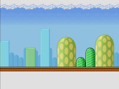
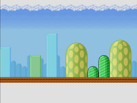
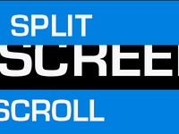
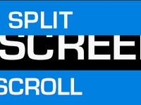

Gameduino: a game adapter for microcontrollers¶
 


 

Tiny microcontrollers like the Atmel AVR used in the Arduino are now much more powerful than the 8-bit computers from the 1980s. So why not use them to play video games?


Note
Thanks to all our Kickstarter backers - we shipped Kickstarter rewards on June 6th.
If you would like to buy a Gameduino, they just went on sale at Seeed Studio.
Follow @gameduinoThe Gameduino Q&A site is now live: http://answers.gameduino.com
If you have questions, email me at jamesb@excamera.com
Gameduino is a game adapter for Arduino - or anything else with an SPI interface - built as a single shield that stacks up on top of the Arduino and has plugs for a VGA monitor and stereo speakers.
The sound and graphics are definitely old-school, but thanks to the latest FPGA technology, the sprite capabilities are a step above those in machines from the past.
- video output is 400x300 pixels in 512 colors
- all color processed internally at 15-bit precision
- compatible with any standard VGA monitor (800x600 @ 72Hz)
- background graphics
- 512x512 pixel character background
- 256 characters, each with independent 4 color palette
- pixel-smooth X-Y wraparound scroll
- foreground graphics
- each sprite is 16x16 pixels with per-pixel transparency
- each sprite can use 256, 16 or 4 colors
- four-way rotate and flip
- 96 sprites per scan-line, 1536 texels per line
- pixel-perfect sprite collision detection
- audio output is a stereo 12-bit frequency synthesizer
- 64 independent voices 10-8000 Hz
- per-voice sine wave or white noise
- sample playback channel
The adapter is controlled via SPI read/write operations, and looks to the CPU like a 32Kbyte RAM. (Unlike many 8-bit machines, there are no restrictions on when you can access this RAM). There is a handy reference poster showing how the whole system works, and a set of sample programs and library.

Gameduino is open-source hardware (BSD license) and all its code is GPL licensed.
Logo design by iLKke.
Last modified $Date: 2011-06-11 16:44:02 -0700 (Sat, 11 Jun 2011) $